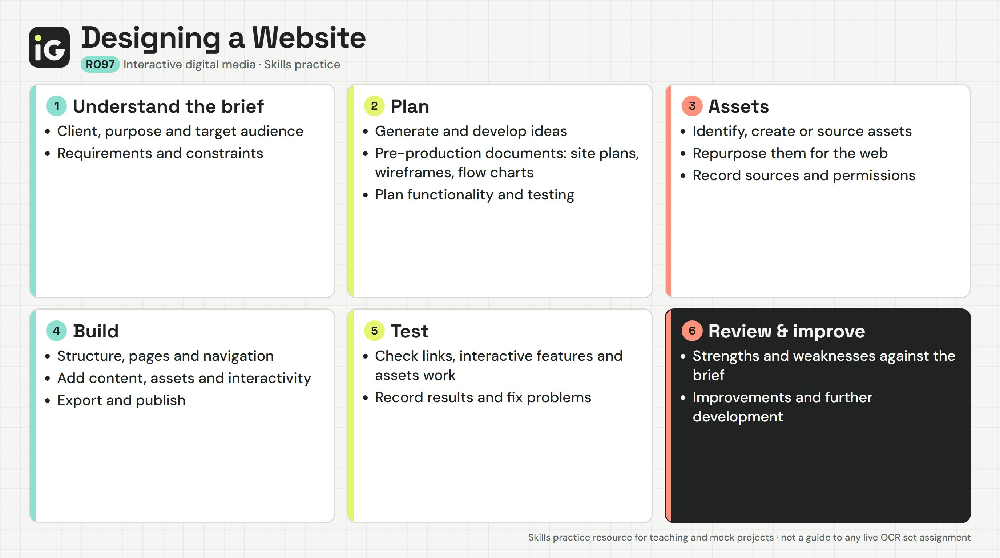

Skills practice resource. These guides support teaching and mock projects. They are not a guide to any live OCR set assignment. During your assessed NEA, follow only your teacher's instructions and the OCR set assignment.
R097 / Web workshop
Creating
Creating
a website.
Turn your ideas into a working digital experience. Plan the journey, build with purpose, then test every detail.
Your project essentials
Set up for a better build.
Record your assets, track your tests and keep your evidence together.
The website workflow
From brief to browser.
Use these guides to practise each skill before your assessed project.
0 / 21 guides completed
Progress is saved on this browser. Export it to move to another device.
Think like a web designerA working link is
A working link is
only the beginning.
A good website meets the brief and helps its audience do something. Your evidence should connect the planning, build and testing.
Explain each test, fix and retest in your own words.
- Plan an audience journey. Identify where a visitor starts, what they need and where they go next.
- Prepare your media. Check image sizes, file formats, ownership and readability.
- Test against an expectation. Record the action, expected result, actual result and evidence.
- Fix and retest. Repeat the failed test and record the new outcome.
Practical build support
Open the build guide Building in Dreamweaver?
Follow the companion guide for the practical steps of constructing your website.
iMedia Tools
Explore the tools Make your assets in the browser.
PhotoCraft for images, VectorCraft for logos and Voice Studio for voice-overs. Free, with nothing to install.
The whole website project at a glance
